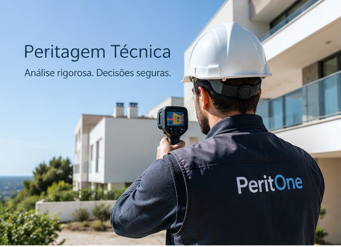
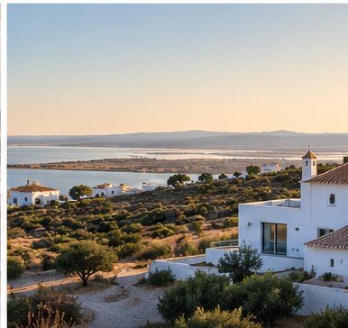

01
Peritagem Técnica
Vistorias, análise de patologias construtivas, termografia e elaboração de relatórios técnicos para compreender problemas e fundamentar decisões.
Ver página de Peritagem Técnica →PERITAGEM TÉCNICA · TERMOGRAFIA · FISCALIZAÇÃO
A PeritOne presta serviços de peritagem técnica de obras e edifícios, diagnóstico de patologias com apoio de termografia e fiscalização técnica de obras no Algarve e Alentejo.

DUAS ÁREAS DE ATUAÇÃO
Vistorias, análise de patologias construtivas, termografia e elaboração de relatórios técnicos para compreender problemas e fundamentar decisões.
Ver página de Peritagem Técnica →
Acompanhamento técnico da execução para ajudar a identificar desconformidades e problemas enquanto ainda podem ser corrigidos.
Ver página de Fiscalização →
ÁREA DE ATUAÇÃO
A PeritOne presta serviços técnicos a proprietários, compradores, empresas e outros intervenientes em obras e edifícios.

CONTACTO
Explique-nos a situação e indique o local da obra ou imóvel.